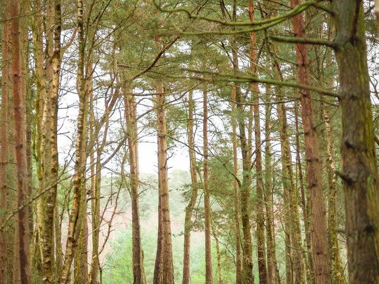

VOCABULARY · 主題 2000 字 PART 2 UNIT 25
Geographical terms．地理名詞
海岸、沙漠、森林、海洋、平原、溪流、山谷、樹林和環境，共 9 個。注意 desert（沙漠）和 dessert（甜點）。
共 9 個單字．點 🔊 聽發音

1coastn.
海岸；海濱
on the coast 在海岸邊
We drove along the east coast of Taiwan.我們沿著台灣東海岸開車。

2desertn.
沙漠
一個 s；dessert（甜點）兩個 s
Camels can walk in the desert for days.駱駝可以在沙漠走好幾天。
3environmentn.
環境
environmental 環境的
We should protect the environment.我們應該保護環境。

4forestn.
森林
比 woods 大
Many animals live in the forest.很多動物住在森林裡。

5oceann.
海洋
the Pacific Ocean 太平洋
Whales live in the ocean.鯨魚住在海洋裡。
6plainn. / adj.
平原；樸素的；簡單的
plain clothes 樸素的衣服
Rice grows well on the wide plain.稻米在廣大的平原上長得很好。

7streamn.
小溪；溪流
比 river 小
We caught small fish in the stream.我們在小溪裡抓小魚。

8valleyn.
山谷
複數 valleys
A small village sits in the valley.一個小村莊座落在山谷中。

9woodsn.
樹林
常用複數；比 forest 小
We took a walk in the woods.我們在樹林裡散步。
FOCUS
大小比一比
| 大 | 小 |
|---|---|
| ocean 海洋 | sea 海 |
| river 河 | stream 小溪 |
| forest 森林 | woods 樹林 |
desert 沙漠（一個 s）↔ dessert 甜點（兩個 s，甜點吃兩份）。